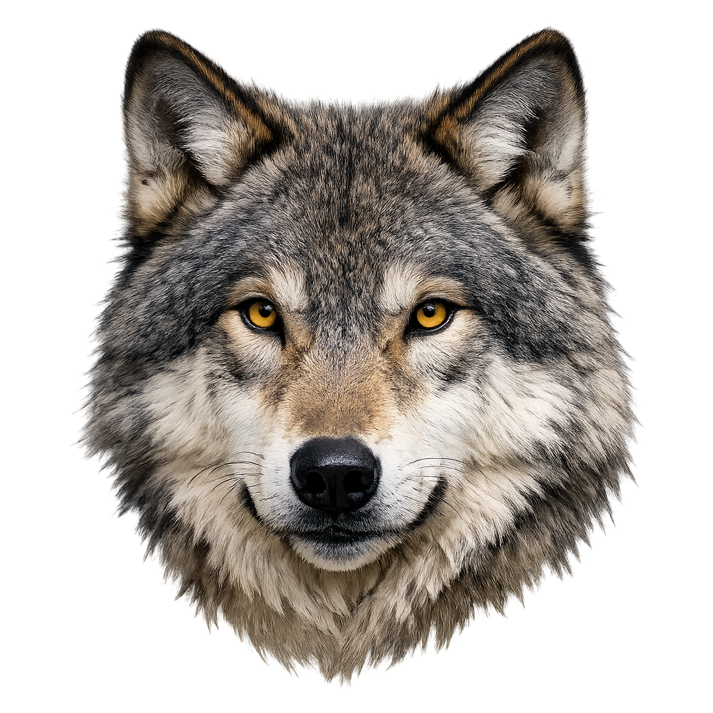

- Animacje
- To płynne przejście z jednego stylu elementu w inny styl. Żeby zrobić animację należy użyć @keyframes. Do określania kolejnych stanów elementów można użyć "from" "to", albo podawać procenty wykonania animacji. Do zmiany stylu elementu stosuje się transform rotate, scale, albo translate.

Kod
1 img{
2 position: relative;
3 width: 10%;
4 animation: img 5s;
5 }
6 @keyframes img{
7 from{
8 left: 50%;
9 transform: rotate(180deg) scale(2);
10 opacity: 0;
11 }
12 to{
13 left: 0;
14 transform: rotate(0deg) scale(1);
15 opacity: 1;
16 }
17 }
Jak to działa?
- 1-5 Dla znacznika img ustawiamy pozycjonowanie "relative", żeby był punkt odniesienia, podczas zmiany pozycji. Ustawiamy też szerokość 10% na zdjęciu. Dodajemy animacje o nazwie img, o czasie trwania 5 sekund.
- 6 Rozpoczynamy animację od wpisania "@keyframes" i nazwę animacji, czyli img.
- 7-11 Podajemy od jakiego stanu ma się rozpocząć animacja. Początkowo obrazek będzie przesunięty o 50%, obrócony o 180° i powiększony x2. Na koniec trzeba dodać opacity 0.
- 12-16 Podajemy w jakim stanie ma się zakończyć animacja. Końcowo obrazek nie będzie przesunięty, ani obrócony i powiększony. Na koniec trzeba dodać opacity 1.